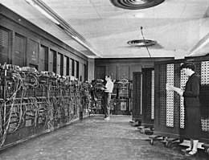

Histoire de L'ENIAC
Le premier véritable ordinateur.

L'ENIAC (Electronic Numerical Integrator and Computer)
A l’origine de l’informatique, une machine géante de 30 tonnes, composée de 19.000 tubes, occupant une surface de 72 m². Elle mesure pas moins de 20m de long et 2,50m de haut.
Cette machine, baptisée ENIAC, a été inaugurée le 15 février 1946 à l’université de Pennsylvanie.
L’ENIAC (Electronic Numerical Integrator and Computer) est en fait le premier calculateur totalement électronique disposant des mêmes capacités que la machine de Turing.
Il peut être reprogrammé pour résoudre, en principe, tous les problèmes calculatoires.
Il est précédé en 1941 par le Z3 allemand, une machine programmable mais encore électromécanique
(utilisation de relais), et par la série de calculateurs britanniques Colossus. L'ENIAC, comme les Colossus,
utilise des tubes à vide.
Le principe de l'ENIAC vient d'une idée de John William Mauchly, professeur de physique.
Participant à une conférence à l'Ursinus College, il voit des analystes produire des tables de tir,
il se rend compte que ces calculs pourraient être réalisés électroniquement. J. Presper Eckert résout les
problèmes d'ingénierie, le principal étant la durée de vie des tubes électroniques. C'est l'armée américaine
qui va financer et construire le projet pour les besoins du laboratoire de recherche en balistique.
L'ordinateur est financé le 17 mai 1943 sous le nom Project PX et construit à la Moore School of Electrical
Engineering (en) de l'université de Pennsylvanie à partir de mai 1944. Il est opérationnel à fin 1945,
est dévoilé au public en février 1946, puis est coupé le 9 novembre 1946 pour être rénové et sa mémoire augmentée.
Le 14 février 1946, il est dévoilé au public à l'université de Pennsylvanie à Philadelphie puis est transféré à
Aberdeen Proving Ground, un laboratoire de l'US Army au Maryland, en 1947 où il est remis en marche le 29 juillet
et commence les calculs des tables de tirs. Il continue à fonctionner jusqu'à son arrêt en 1955. Aujourd'hui,
une partie de la machine est conservée à l'université de Pennsylvanie où un petit musée lui est consacré.
L'ENIAC reçut l'attention des journaux notamment à cause de sa taille imposante, mais d'une certaine manière,
il n'est pas la fine fleur de son ère. Contrairement au Z3 de Konrad Zuse (1941) ou au MARK I de Howard Aiken
(1944), il doit être recâblé pour exécuter un nouveau programme. De plus, l'ENIAC utilise des registres décimaux
et non binaires 1,2.
Pendant la Seconde Guerre Mondiale, la programmation de cette énorme machine va devenir un enjeu majeur.
Notamment pour effectuer les calculs complexes des trajets balistiques pour l’armée américaine.
Pour optimiser l’exécution de ces calculs (jusque-là effectués à l’aide de grandes calculatrices mécaniques
analogiques), on fit appel à des femmes, que l’on a appelées « computeurs », de l’anglais « to compute » :
calculer.
Face à cette machine, elles ne disposaient d’aucun mode d’emploi pour manipuler les quelques 3000 commutateurs
au milieu des centaines de câbles assurant la circulation des données. Elles durent coder les instructions de
l’ENIAC. Jean Bartik et Betty Holberton ont été responsables du « Master Programmer » qui gérait toutes les
séquences et programmes de l’ENIAC.
Jean Bartik écrivit le langage de programmation BINAC. On doit à Betty Holberton le code d’instruction C-10
qui fut destiné à l’UNIVAC,successeur de l’ENIAC.
Ces programmatrices d’élite, les « ENIAC Girls », furent longtemps oubliées de l’histoire.
Elles n’accéderont à une certaine reconnaissance qu’en 2013, lorsqu’un documentaire leur fut consacré.
En 1997, Jean Bartik sera décorée du prix des « pionniers en Informatique ».
L'ENIAC utilise un compteur à anneaux à 10 positions pour enregistrer les chiffres.
L'arithmétique est réalisée en comptant les pulsations avec les anneaux et en générant des pulsations
lorsque le compteur fait un tour. L'idée revient en fait à émuler par l'électronique les systèmes de roue à
chiffres de machines mécaniques.
Sa capacité est de 20 nombres à 10 chiffres signés permettant chacun de réaliser 5 000 additions simples chaque
seconde (pour un total de 100 000 additions par seconde). Il ne peut en revanche gérer en moyenne que 357
multiplications ou 38 divisions par seconde ou trois extractions de racine par seconde. Les entrées-sorties se
faisaient au moyen de cartes perforées.
Physiquement l'ENIAC est une grosse machine : il contient 17 468 tubes à vide, 7 200 diodes à cristal,
1 500 relais, 70 000 résistances, 10 000 condensateurs et environ 5 millions de soudures faites à la main6.
Son poids est de 30 t pour des dimensions de 2,4 x 0,9 x 30,5 m occupant une surface de 167 m2
(1 800 pieds carrés)7. Sa consommation est de 150 kW.
Il utilise des tubes à vide à 8 broches, les accumulateurs décimaux sont réalisés avec des flip-flops 6SN7,
alors que les fonctions logiques utilisent des 6L7, 6SJ7, 6SA7 et 6AC7. De nombreux 6L6 et 6V6 servent de relais
pour acheminer les pulsations entre les différents racks d'éléments.
Certains experts en électronique prédirent que les tubes tomberaient en panne si fréquemment que la machine en
serait inutilisable. La prédiction n'était que partiellement correcte, de nombreux tubes brûlaient chaque jour
laissant l'ENIAC inopérant la moitié du temps. Des lampes plus fiables ne furent disponibles qu'à partir de 1948,
Eckert et Mauchly durent donc utiliser des tubes de qualité standard. La plupart des problèmes liés aux tubes se
produit au démarrage ou à l'arrêt de la machine car ils sont soumis à un important stress thermique.
Le simple fait de ne jamais couper la machine, permet aux ingénieurs de réduire le nombre de pannes à un ou deux tubes
par jour. La plus longue période de calcul sans panne est atteinte en 1954 avec 116 heures, ce qui est une prouesse
compte tenu de la technologie de l'époque.
Eckert et Mauchly fondent une société, Eckert-Mauchly Computer Corporation (en), et produisent le premier ordinateur
en 1949 : le BINAC. La firme est rachetée l'année suivante par Remington Rand et renommée Univac.